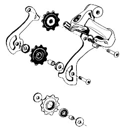
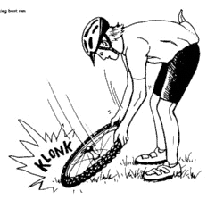

Other bike articlesLet me be honest with you. I really like Lennard Zinn's Zinn and the Art of Mountain Bike Maintenance. It covers just about everything you need to know about caring for your mountain bike. All procedures are described in a clear way, and there are plenty of illustrations to show you what to do. It's a valuable reference for all mountain bikers.
 one of the many exploded diagrams The title of the book is a play on Zen and the Art of Motorcycle Maintenance, which obviously inspired Zinn. He quotes from it at the beginning of the book as he tries to convey his deep pleasure in fixing mountain bikes. He goes on to write
The step-by-step procedures in this book, coupled with the exploded diagrams are so simple to follow that even the pure romantic can discover a passion for spreading new grease on old parts. The romantic can also appreciate how success at bike mechanics requires that the procedures are done with a certain sense of love. If not, frustration will take over, and all the care you imagined putting into your mountain bike will be lost, along with the joy of riding.Ah, almost poetry, that. I couldn't agree more.The book is very approachable. The writing is casual and conversational. You can almost hear Lennard talking to you as you're working. "Spin the hub while holding the axle, and turn the axle while holding the hub. Does it turn roughly? Is the axle bent or broken? Wobble the axle from side to side. Is the bearing adjustment loose?" To make sure you don't get too bored with all this bike talk, he throws in little jokes. For example, he mentions Beryllium as an exotic material used by framebuilders. "A few folks have tried building bikes out of the stuff. It works great, but has the drawback of being poisonous if ingested or inhaled; therefore I strongly recommend against trying to taste or snort a Beryllium frame."
 fixing a bent rim The illustrations are copious. They are hand-drawn and very clear. They allow you to see what's going on much better than photos would. Some people think that this gives a retro feel to the book: it seems that nowadays heaps of color glossy photos are almost a requirement for bike books. But Zinn has chosen clarity and simplicity over being trendy. I approve.
The book is quite comprehensive. It covers all parts of your bike, explaining procedures as simple as patching a punctured tube to as advanced as replacing a headset. Each major bike part has its own section, which covers almost all varieties of the part and has a troubleshooting guide to help you out when things go wrong. In addition, there is a useful and important chapter on emergency repairs (with several fixes suggested, depending on what tools you have) and trail safety.
In summary, this fine book is an invaluable reference for how to keep your bike in top working order as well as being fun to flip through.